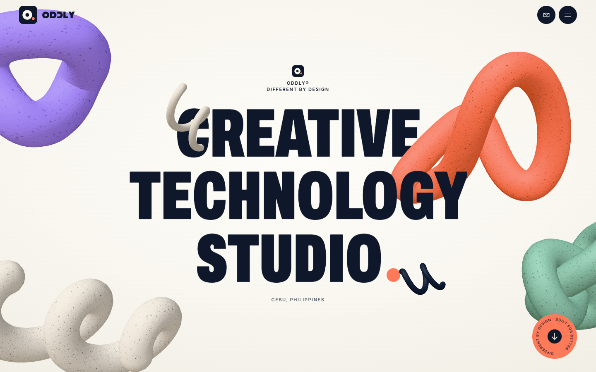
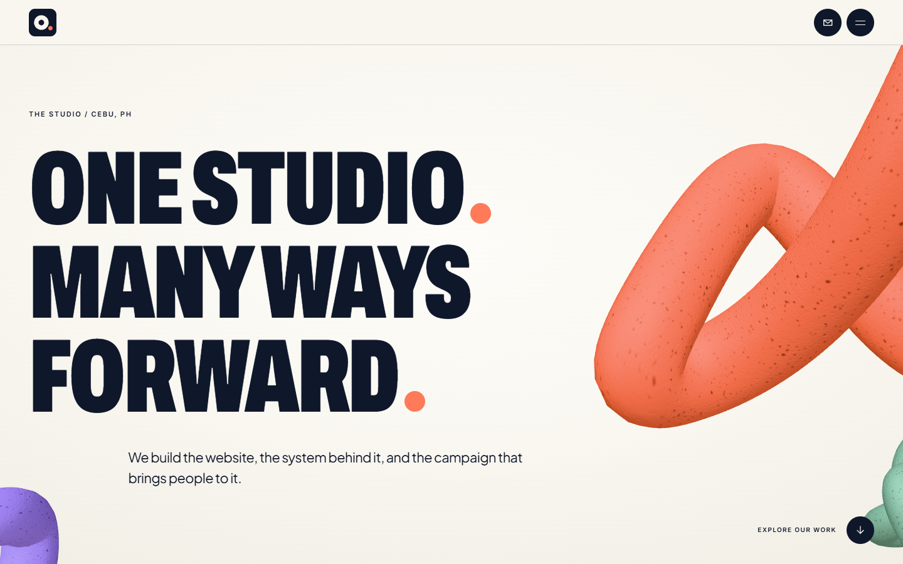
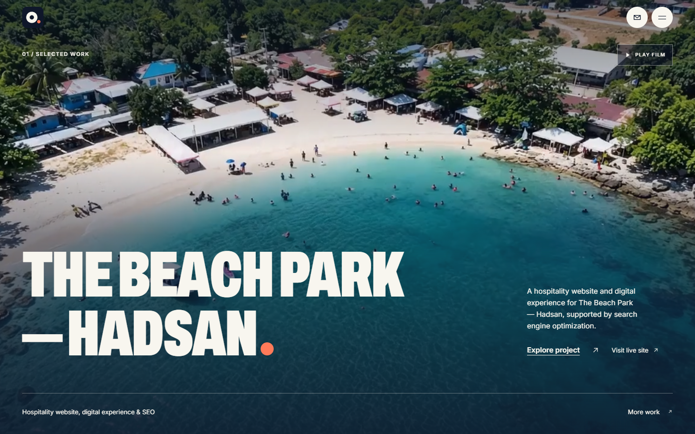
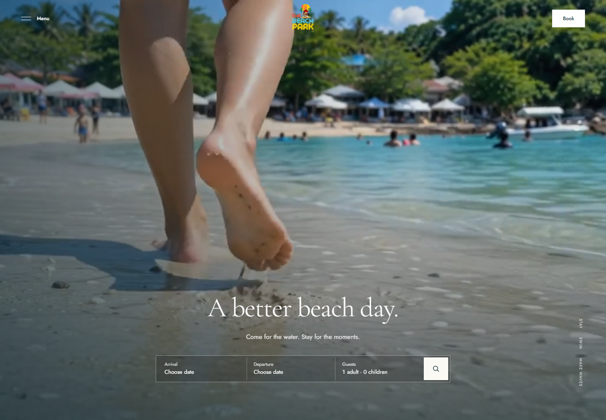
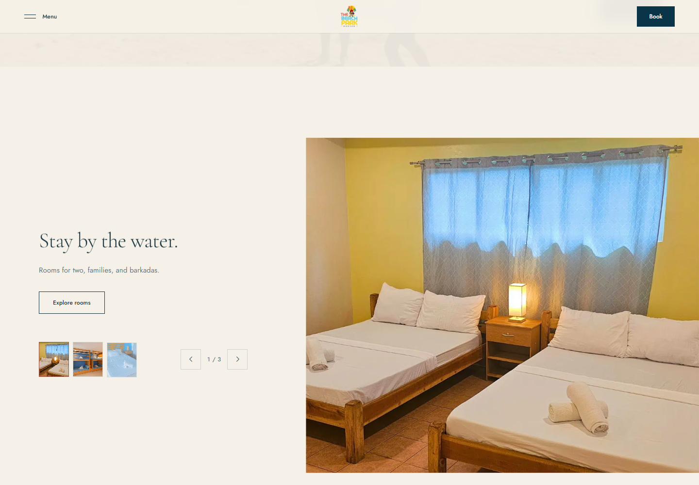
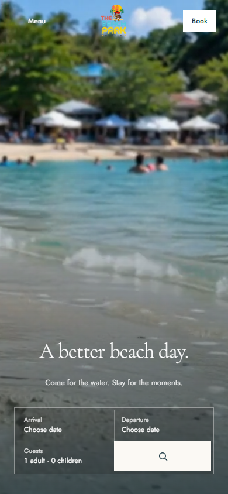

ODDLY / Direction study / 15 October 2026
One continuous idea.
Three finished browser frames, followed by the short scroll sequence. Open the live local preview ↗






The scroll sequence
The hero type parts as the coral loop approaches. The studio composition holds, then the sculptures clear and the project image opens to the edges.


The studio sculpture is rendered from ODDLY’s existing 3D geometry. The featured film and three interface screenshots come from the studio-confirmed thebeachpark.vercel.app. The earlier generated coastal concept has been replaced. Asset provenance and prompts ↗
Confirmed project screenshots
Real browser captures of the desktop homepage, accommodation section, and mobile homepage on 15 October 2026. These also appear in the project case study.


